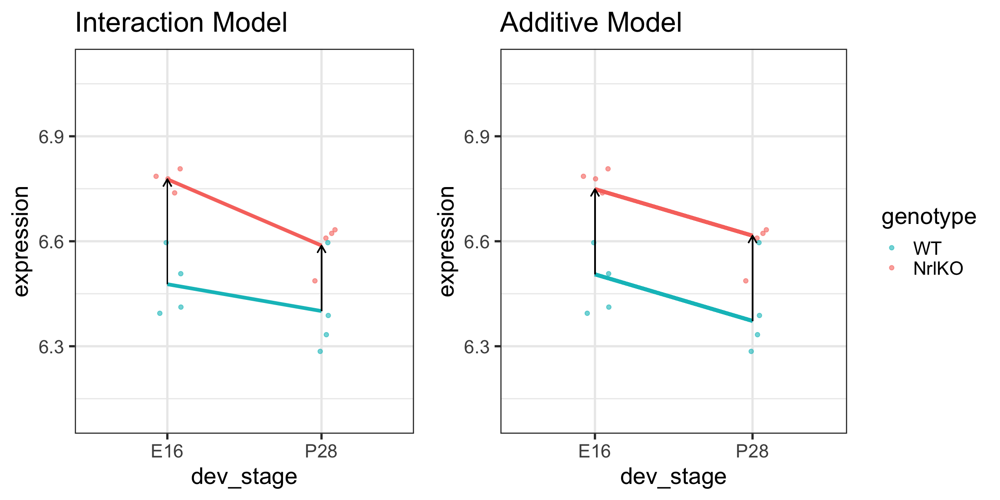

How to compare means of different groups (2 or more) using a linear regression model
indicator variables to model the levels of a qualitative explanatory variable
Write a linear model using matrix notation
understand which matrix is built by R
Distinguish between single and joint hypotheses
\(t\)-tests vs \(F\)-tests
Comparing more than two groups
Biological question: do gene expression levels differ by developmental stage?
Statistical question: are gene expression generated by a single common distribution across all developmental stages? Or do the distributions differ by timepoint?
In general, one is not interested in: \(H_0: \theta=0\)
Simple genotype effect: WT vs NrlKO at E16
And now the “treatment effects”…
Important: Simple/Conditional vs Main/Marginal effects
“Treatment effect” parameters represent conditional effects: effects at a given level of the other factor (e.g. effect of genotype at E16). These are also called simple effects. They do not represent marginal effects.
A marginal effect, on the other hand, is the overall effect of a factor, averaged over all levels of the other factor (e.g. the overall effect of genotype, averaged over all levels of developmental time). These are also called main effects.
Simple genotype effect: WT vs NrlKO at E16
Effect of genotype at E16: \(\tau_{KO}=E[Y_{NrlKO,E16}]-E[Y_{WT,E16}]\)
lm estimate: \(\hat{\tau}_{KO}\) is the difference of sample respective means (check below)
It is important to remember that lm reports simple, not main effects!
Why? Because of the parameterization used! (see companion notes)
It can also be shown that \(\tau_{KO:P28}=E[Y_{NrlKO,P28}]-\tau_{P28}-\tau_{KO}-\theta\) (see previous slide and companion notes)
Let’s examine these parameters closer
For our model, lm tests 4 hypotheses:
\(H_0: \theta=0\)
\(H_0: \tau_{KO}=0\)
\(H_0: \tau_{P28}=0\)
\(H_0: \tau_{KO:P28}=0\)
We may not be interested in these hypotheses, e.g., \(\tau_{KO}\) and \(\tau_{P28}\) are conditional effects at a given level of a factor (simple effects)
Ex 1: nothing statistically significant, very flat genes
Note that a significant interaction means the simple effects may not agree
For the gene 1434709_at on the previous slide, compare the effect of genotype at E16 and P28:
Effect
lm output
Estimate
Genotype at E16
genotypeNrlKO
Genotype at P28
Main effects (overall): does genotype have an effect on gene expression?
We can’t (yet) answer this question! It depends (on the level of dev_stage)! (more later)
Ex 3: BALANCED & only genotype at E16 is significant
For simplicity here, we’ll add a fake observation in the NrlKO & E16 group (close to its mean) so that we have a balanced design
Note
In unbalanced designs the main effects are a weighted average of the simple effects, and the weights are not easy to interpret (beyond the scope of this course but worth noting the issue!)
Ex 3: BALANCED & only genotype at E16 is significant
For both of these genes:
The interaction effect is not significant (almost parallel pattern)
The effect of developmental stage is not significant for WT (almost flat pattern)
There is a significant genotype effect at E16
There may be a genotype effect regardless of the developmental stage (main effect). However, that hypothesis is not tested here!!
How do we test a main effect??
How do we test for a main effect?
The main effect measures the overall association between the response and a factor - it is the (weighted) average of an effect over the levels of the other factor
anova() can be used to test the main effects
The following is a way to write the null hypothesis that there is no main effect of genotype:
As we suspected, there is a significant genotype effect for this probe (1447753_at), i.e., its mean expression changes in NrlKO group (compared to WT), on average over developmental stages.
Technical note:
anova() uses type I sums of squares (sequential; conditional on previous terms), thus order matters in unbalanced designs! See this primer on types of sums of squares for an intuitive explanation.
Main & interaction effects: important notes
A significant interaction effect means that the effect of one factor depends on the levels of another
e.g., the effect of genotype depends on developmental stage
Main effects: are the (weighted) average of an effect over the levels of the other factor
A non-significant main effect means that, on average, there’s no evidence of a factor’s effect
e.g., no evidence of a genotype effect, on average over both developmental stages
Caution
If the interaction is significant, it is possible that one or both simple effects are significant but the average effect (i.e., the main effect) is not. This is because the effect of a factor depends on the level of the other one. Looking at main effects alone may mask interesting results!
Additive models
In some applications, we need to/want to test the interaction term
However, additive models are simpler and smaller
If there are no statistical or biological grounds to include the interaction term, additive models are preferred
Main effect estimate of genotype = \[\hat{\tau}_{KO} + \frac{1}{2}\hat{\tau}_{KO:P28}\]
Main effect estimate of dev_stage = \[\hat{\tau}_{P28} + \frac{1}{2}\hat{\tau}_{KO:P28}\]
Additive models and balanced designs
In an additive model, the lm() parameters for balanced designs are average effects, over the levels of the other factor - same as in anova()!
Note the agreement between lm and anova; this is gone in unbalanced designs since weights are computed differently!
The intercept parameter is now \(\bar{Y} - \bar{x}_{ij,KO}\hat{\tau}_{KO} - \bar{x}_{ij,P28}\hat{\tau}_{P28}\)
Note
Type III sum of squares (partial; conditional on all other terms in the model) are required for agreement in unbalanced designs (use car::Anova() to obtain) - beyond our scope
Parameters in additive models represent main effects
# A tibble: 3 × 6
term df sumsq meansq statistic p.value
<chr> <int> <dbl> <dbl> <dbl> <dbl>
1 genotype 1 0.237 0.237 27.7 0.000154
2 dev_stage 1 0.0709 0.0709 8.27 0.0130
3 Residuals 13 0.111 0.00857 NA NA
Additive vs interaction models

Interactions with multi-level factors (more than 2 groups)
Back to our old friend the BB114814 gene
Interactions with multi-level factors (more than 2 groups)
We can generalize the regression model to factors with more levels (e.g., E16, P2, P10 and P28): we just add more indicator variables (and parameters)!
Parameters are now main effects (on average over the levels of the other factor), but we have more!
Question
Does developmental stage have a significant effect on this gene’s expression?
We haven’t tested that!!
Recall: F-test and overall significance
the t-test in linear regression allows us to test single hypotheses; these are given in the summary of lm\[H_0 : \tau_i = 0\]\[H_A : \tau_j \neq 0\]
but we often like to test multiple hypotheses simultaneously: \[H_0 : \tau_{P2} = \tau_{P6} = \tau_{P10} = \tau_{P28}=0\textrm{ [AND statement]}\]\[H_A : \tau_j \neq 0 \textrm{ for at least one j [OR statement]}\] the F-test allows us to test such compound tests
Compound tests in 2-factor Interaction models
lm tests each factor level separately (OR) - simple effects in reference category of other factor
anova tests each factor level jointly (AND) - main effect, controlling for the previous ones
The \(x_{**,ijk}\) are indicator variables (see companion notes)
More general: F-test to compare nested models
\(H_0: \alpha_{k+1} = ... = \alpha_{k+p}\)
\[F = \frac{(SS_{reduced} - SS_{full})/(p)}{SS_{full} / (n-p-k-1)} \sim \mathbf{F}_{p, \,n-p-k-1}\] This \(F\)-statistic compares the following two models: